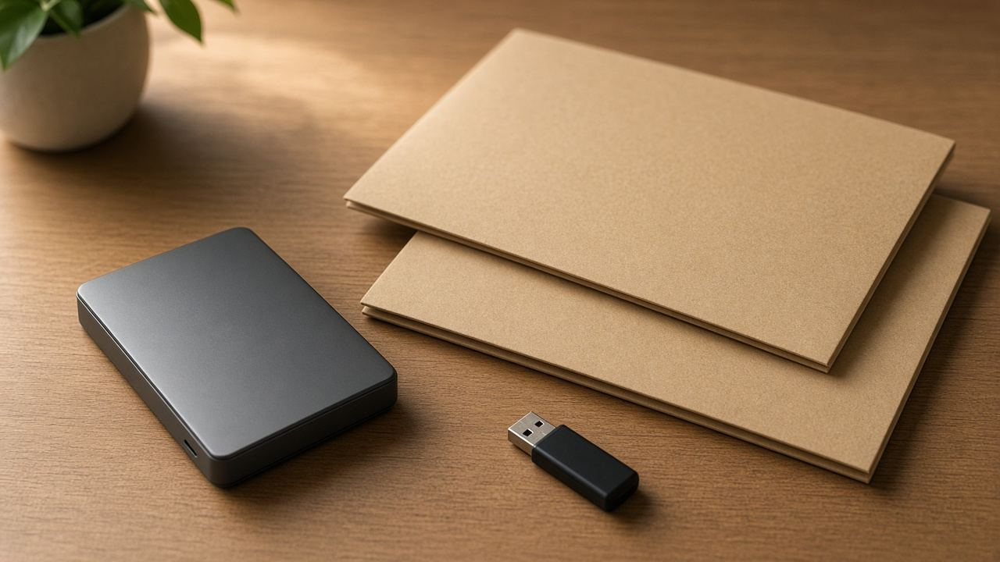

ملفات
أسماء الملفات والنسخ: قاعدة 3-2-1 من غير تعقيد

الملف اللي اسمه «نهائي نهائي 3» مش بيتفتح بعد شهرين. الاسم الكويس بيقول المحتوى والتاريخ من غير ما تعتمد على ذاكرتك: معرض-الدوحة-2026-10-25.pdf أوضح من new.pdf. سيب المسافات القليلة، وتجنّب الرموز اللي بعض الأنظمة بترفضها.
ثلاث نسخ، وسيطين، واحدة بره
قاعدة 3-2-1 قاعدة حفظ منتشرة عند المصورين وعند إرشادات النسخ الاحتياطي: ثلاث نسخ من الملف، على نوعين مختلفين من التخزين على الأقل، ونسخة واحدة في مكان تاني. النوعين ممكن يكونوا قرص الجهاز وسواقة خارجية. المكان التاني ممكن يكون قرص عند حد من العيلة أو تخزين سحابي أنت فاهم مين اللي بيقراه.
نسختين على نفس اللابتوب مش نسخة احتياطية. لو الجهاز اتسرق أو القرص وقف، النسختين بيروحوا مع بعض. والنسخة السحابية الوحيدة، من غير أصل عندك، بتبقى مرتبطة بالحساب وكلمة السر والاشتراك.
قبل ما تشارك
شوف بيانات الملف، مش الصورة بس. كاميرات وموبايلات كتير بتحفظ مكان التصوير جوه البيانات الوصفية. طمس وجه في الصورة مش بيمسح المكان المكتوب في الملف. لو الصورة هتتنشر، شيل البيانات دي بأداة بتقول إنها بتشيلها، أو صوّر الشاشة بس لو الجودة تكفي والمحتوى مش محتاج الأصل.
احفظ الأصل من غير تعديل، واعمل نسخة تانية للضغط أو للعلامة المائية. لو النسخة المعدّلة طلعت وحشة، الأصل لسه موجود.